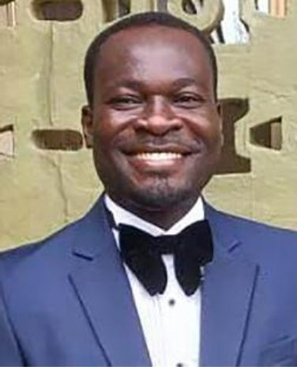
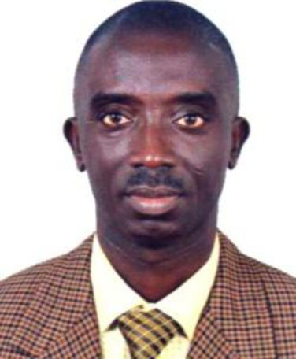

 EZEKIEL KOJO OPOKU:
Results-oriented Environmental Specialist with 10+ years of experience driving environmental compliance, sustainability, and WASH
project success. Expertise in environmental risk assessment, project construction safety, and developing impactful EHS strategies.
Proficient in EMS, Risk Assessment, Sustainability, Climate Change, and ESG. Proven ability to reduce environmental impact and
promote a culture of safety. I have managed multipurpose projects as an Environmental specialist for both government and private
sector organizations, utilizing my expertise in environmental management, Health and safety and ESG strategies to ensure
sustainable practices and compliance with regulations.
My academic background includes a Master of Science in Environmental Studies and Policy, as well as a Post Graduate Diploma in
Business Administration from GIMPA, MA Natural Resource Law and Bachelor of Arts from University of Ghana. These qualifications,
combined with my certifications in ISO 14001 Lead Auditor and trainer, Health, Safety, and Environmental from Minerals Commission,
demonstrate my dedication to environmental management and sustainability.
I am passionate about creating positive environmental impacts and helping organizations achieve their sustainability goals through
effective environmental management and ESG strategies. I am confident in my ability to contribute to the success of any organization
looking to improve their environmental performance, work safety and sustainability practices.
 JOHN KWESI OCRAN:
With a strong interest in agricultural development and environmental sustainability, Dr. John Kwesi Ocran has, over the years, had carriers
in teaching science & technology management, and environmental consulting.
He holds a BSc in Agricultural Science from the University of Cape Coast, an MSc in Postharvest Physiology (KNUST) and a PhD in
Agricultural Extension from the University of Cape Coast, and a Certificate in Project Management from the African Management and
Development Institute (AMADI, Swaziland). With about 12 years' experience in environmental consulting, his services are tailored to meet
the demands and needs of the Mining, Quarrying, Sand & Stone Wining and Salt Mining companies.
Specifically, he focuses on general environmental management services, including Environmental Impact Assessments, Strategic
Environmental Assessments, Environmental Management Plans (EMP), Mining Operating Plans (MOP), Emergency Response Plans
(ERP), Annual Environmental Reports, Environmental Quality Monitoring, Environmental Auditing and development of Business
Plans for Quarries and Allied Companies.
JAMES DEKU:
James Deku is an environmental consultant with over 10 years' experience in waste management solutions, environmental
communication, environmental policy and procedure development, Climate risk assessment, Sustainability, WASH and legal research.
He is the founder and Executive Director of Institute for Climate Justice, a non-governmental organization for the promotion of
environmental well-being and accountability.
Mr. James Deku has been a guest speaker at various International and local conferences such as IFAT (Africa's leading Trade Fair for Water,
Sewage, Refuse and Recycling) organized in Johannesburg, South Africa and WASH programs organized by Coalition of NGO's in Water and
Sanitation (CONNIWAS) in Accra, Ghana. He is a regular TV and radio guest on waste management and has published feature articles in
helping develop good attitude of the public towards waste management and sanitation. James brings on board vast experience In
environment and Law.
Mr. James Deku Holds Master of Science in Environmental Studies and Policy (GIMPA), Masters in Public Administration (KNUST), Bachelor
of science in Business Administration (GIMPA), Bachelor of Laws degree (GIMPA) and a Diploma in Communications Studies (AUCC)
THEOPHILUS WEGBE:
Theophilus Wegbe is a dynamic and skilled Educationist with a strong background in Project Management, Higher Education Administration,
Human Resource Management, Project Accounting and Budgeting, International Relations, Community engagement and Database
Management. He holds an MBA in Human Resource Management, a BSc. Administration in Human Resource Management, and a Diploma
in Accounting from the University of Ghana.
He has served as Administrative Assistant, Senior Administrative Assistant, Executive MBA Programs, University of Ghana, Legon, Local
Executive Program Officer, Executive Master in Development Policies & Practices (DPP) - Graduate Institute, Geneva, Project/Program
Officer, Ghana Institutional Support Project (GISP), and Senior Assistant Registrar, Directorate of Human Resource - Ho Technical
University, Ho. He brings on board twelve years’ experience in Organizational and Environmental management at work place.